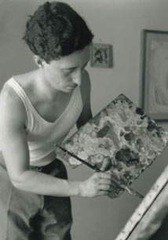

“Il tempo è degli uomini”: è il primo verso di una poesia di Giovanni Profumo. È uno dei tanti passaggi nelle lettere e negli scritti dell’artista in cui egli nega o scherza sull’umana necessità di scandire o calcolare il passare del tempo. Gli esempi abbondano e variano dal tono giocoso ad uno più impegnato. In una lettera alla figlia Monica, al posto della data scrive: “data (ma non concessa)”; e sotto continua, “se pensi (ma che fai, pensi?) di arrivare a Genova il 31 C.M. (Ah! Ah! Ah!)…”.
In una lettera allo scrittore Giorgio Calcagno spiega meglio: “nel tempo non ci credo quasi perché, credendo fermamente nell’eternità, affermo, come altri, che il tempo è tanto breve da essere molto, molto vicino (in senso matematico) allo zero assoluto. Purtroppo è determinante ed anche un po’ negativo il fatto che io ci debba vivere dentro”. Coerentemente con quest’idea Profumo non ha datato una singola lettera, poesia, testo, né un solo quadro in tutta la sua quarantennale attività di pittore. Potrebbe essere il peggiore incubo di uno storico dell’arte: come studiare, come impostare il catalogo di un artista che si oppone con deliberata sistematicità all’organizzazione dei fatti umani lungo una linea temporale? In realtà, proprio questa impossibile ricerca d’infinito è un’affermazione programmatica, una dichiarazione di poetica, che perfettamente corrisponde a ciò che Profumo ha fatto in pittura. Ed è dalla dialettica tra il contatto con la concretezza casuale delle circostanze e il bisogno di tendere all’essenza ideale, al di là di quelle stesse circostanze, che parte il suo processo creativo.
Il percorso artistico di Profumo è la ricerca interiormente motivata e autonoma, spesso solitaria se non isolata, di una sacralità che tenda all’assoluto, alla atemporalità. Allo stesso tempo, consapevole di quanto sottile sia il confine tra il sublime e il ridicolo (da uomo post-romantico), egli procede sempre con lucida ironia, osservandolo quel confine fino a vedere in esso la poesia. Tale sensibilità trova la sua manifestazione più piena nell’ultimo decennio di attività, quando i quadri, ridotti al monocromo, al grado zero della pittura, divengono ognuno frammento visibile di una totalità luminosa e ininterrotta. Ma allo stesso tempo il loro piccolo formato, la visibilità di ogni colpo di spatola e del solco di ogni pelo del pennello riportano sempre l’osservatore alla realtà banale ma anche lirica del qui e ora: del colore steso su una tela, della stanza in cui ti trovi, e di quel fascio di luce pomeridiana che, dalla finestra alle tue spalle, va a giocare proprio con un solco di pennello lasciato dal calibratissimo, piccolo gesto dell’artista.
Raffaele Bedarida